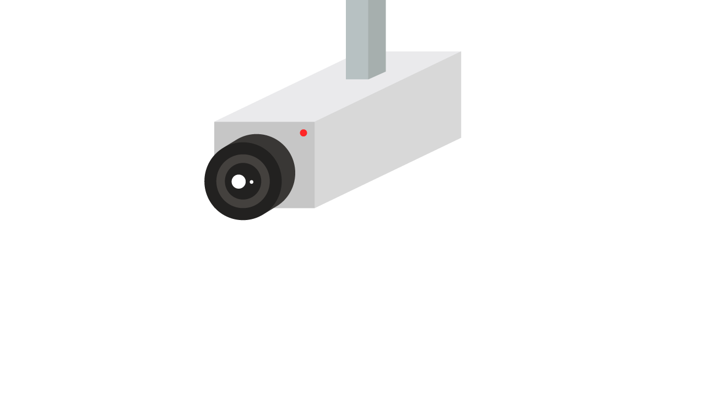

メニュー
メニュー
カメラ操作
ストリーム開始
録画開始
ストリーム撮影
タイムラプス
自動ダウンロード
ライト
リンク
画像のダウンロード
動画のダウンロード
タイムラプス管理
ログアウト
TOP
タイムラプス撮影
撮影間隔:
秒
開始
キャンセル
カメラ
カメラ設定
解像度
320x240
640x480
800x600
1024x768
1600x1200
1024x576
1280x720
1920x1080
フレームレート
2
5
10
20
30
ISO
0
100
200
320
400
500
640
800
1600
輝度
コントラスト
日付のサイズ
向き補正
左右反転
上下反転
モード
picam
opencv
OpenCV設定
動体検知:
無効
有効
閾値:
px
プレビュー:
無効
有効
録画制御:
無効
有効
継続時間:
秒